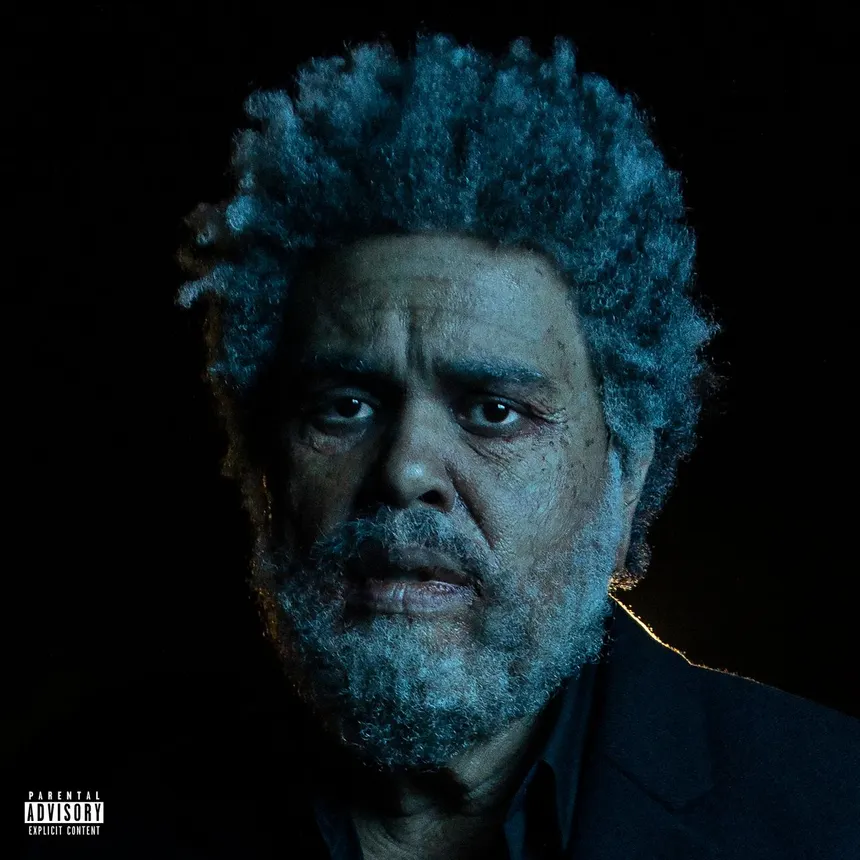
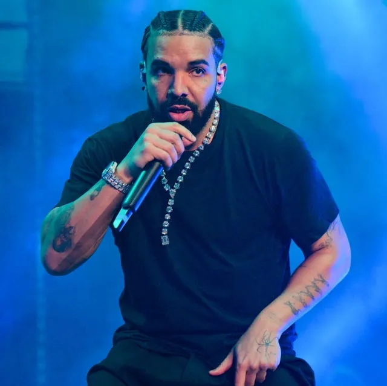

Estilo y álbumes
Abel Tesfaye combina R&B oscuro con sintetizadores ochenteros en discos como After Hours y Dawn FM.

R&B alternativo, rap melódico y temas clave
Abel Tesfaye combina R&B oscuro con sintetizadores ochenteros en discos como After Hours y Dawn FM.

Blinding Lights, Starboy y Save Your Tears.
Desde Toronto, mezcla rap y canto con bases limpias y atmosféricas en trabajos como Take Care y Nothing Was the Same.

God's Plan, Passionfruit y Headlines.
Ambos han coincidido en temas como Crew Love y The Zone.